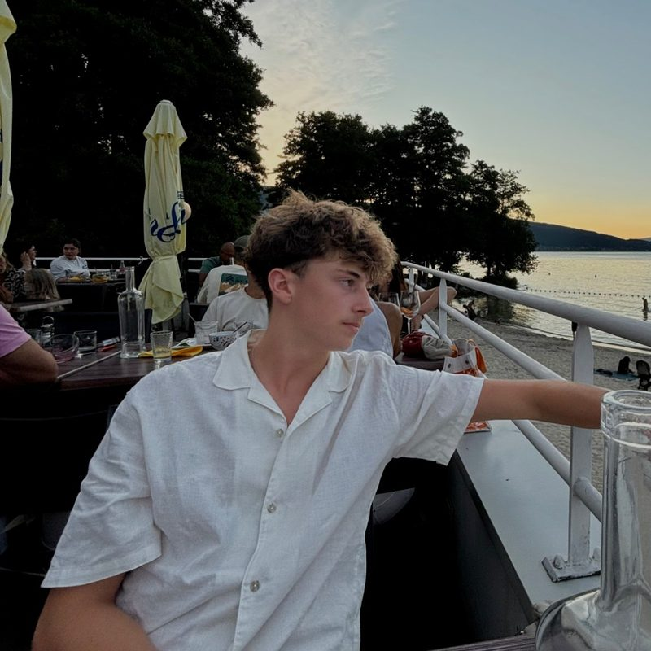

Anthony Merlin
Computer science student, IUT of Annecy
I build desktop applications in C#, design PostgreSQL databases and set up Linux servers. I am looking for a 10- to 12-week software development internship starting in April 2027.
Welcome. This terminal is a shortcut to the rest of the page.
Try help, ls projects or open benevolt.
About me

I am in the second year of a Technical Bachelor's Degree in Computer Science (BUT Informatique, application development track) at the IUT of Annecy, University of Savoie Mont Blanc.
I am adaptable and rigorous, and I have led a team under pressure in a fast-food restaurant while studying. I am looking for a 10- to 12-week internship in software development, starting in April 2027, anywhere in the Auvergne-Rhône-Alpes region. I want to apply what I have learnt in a real team and see what a developer's day-to-day work looks like.
Outside computing, I restored a 1999 Honda Civic with a friend and I have always maintained my own motorcycle myself.
- Studying
- BUT Informatique, 2nd year
- Looking for
- Internship, April 2027, 10 to 12 weeks
- Based in
- Vallières-sur-Fier (74), France
- Mobility
- Driving licence B, own car
Skills
Technical skills
beginner expert
- Designing object-oriented applications
- C# / .NET, WPF (XAML)
- Creating and querying databases
- SQL, PostgreSQL, PL/pgSQL
- Designing dynamic webpages
- HTML / CSS
- JavaScript (Phaser 3)
- PHP, WordPress
- Designing software architecture
- UML, MERISE, PowerAMC
- Administrating Linux servers
- Debian, Ubuntu, Apache, Nginx, SSH
- Version control
- Git / GitHub
- Networking and security
- TCP/IP, IP addressing, AES, UFW firewall
- Procedural programming
- Python
- Operating systems
- Windows, Linux; basic macOS
- Tools
- Visual Studio, VS Code, VirtualBox, pgAdmin, Microsoft Office
- Methods
- Agile / Scrum
- Self-taught
- PowerShell and AutoHotkey scripting, PC hardware troubleshooting
Soft skills
- CuriousI taught myself PowerShell and AutoHotkey, and I like finding out how operating systems and games are built.
- Calm under pressureAs a shift leader, I kept a crew of 10 running through rush hours.
- Well-organisedI plan my week around classes, a part-time job and team projects.
- Team leaderI trained new crew members and handled difficult customer situations.
Languages
- FrenchNative speaker
- EnglishIntermediate (B1)
- ItalianElementary (A2)
- RomanianBasic understanding (A1)
Scale: A1, A2, B1, B2, C1, C2 (Common European Framework).
Experience
University projects (SAÉ)
-
2026, in progress
Benevolt, volunteering platform
University project (SAÉ 3.01), fictional client brief, team project · IUT of Annecy, Annecy, France
Designing a platform that matches volunteers with associations: UML design file, then the PostgreSQL database and its dataset.
-
2026
YAASystem, WordPress hosting on a Raspberry Pi
University project (SAÉ), fictional company, two-person team · IUT of Annecy, Annecy, France
Deploying a LEMP stack on 1 GB of RAM, securing the server and running load tests with zero failed requests.
-
2026
Class booking application (Basic-Fit clone)
University project (SAÉ), fictional project, three-person team · IUT of Annecy, Annecy, France
Writing a 32-page software requirements specification with UML diagrams, a schedule and screen mock-ups.
-
Dec 2025
MotorBike Highway, 2D video game
University project (SAÉ 1.01 & 1.02), two-person team · IUT of Annecy, Annecy, France
Designing and developing a highway-dodging game in C# and WPF, with a test plan and validation tests.
-
2025
Matski, HR database
University project (SAÉ), fictional company, individual work · IUT of Annecy, Annecy, France
Reverse-engineering an existing database, writing business queries and designing an extension with a GDPR analysis.
Part-time jobs
-
May 2026 – Present
Fruit and vegetable department assistant
Hyper U (hypermarket, food retail, 190 employees) · Rumilly, France
Restocking the fruit and vegetable section; answering customers' questions.
-
Sep 2025 – May 2026
Crew member, then shift team leader
Burger King (fast-food restaurant, 30 employees) · Rumilly, France
Coordinating a team of 10 crew members during rush hours alongside another shift leader; training new crew members; handling difficult customer situations.
Education
-
2025 – 2028
BUT Informatique
IUT of Annecy, University of Savoie Mont Blanc · Annecy, France
Technical Bachelor's Degree in Computer Science: 3-year undergraduate degree, second year in progress. Track A: application development (design, development, validation).
-
2022 – 2025
Baccalauréat STI2D, spécialité SIN
Lycée de l'Albanais (high school) · Rumilly, France
Technological high school diploma specialising in information and digital systems, with honours.
Portfolio
Every IT project I have worked on, finished or not. My best work comes first. Pick a technology to filter the list, then open a project for the full story.
Interests
-
Car mechanics
Restored a 1999 Honda Civic EJ9 with a friend for road use: rust removal, weight reduction, bucket seats, respray and body kit.
-
Motorcycling
Owned a motorcycle and carried out its maintenance myself.
-
Computing
Video games, learning how operating systems and games are built, stock trading.
-
Commitment
Young Firefighters at the Rumilly fire station.
-
International
Lived in Romania for 3 years.
References
-
Stéphanie VIBRAC
English Lecturer, International Coordinator
IUT of Annecy (USMB) · Annecy, France
-
Hervé PERRIN
Store Manager
Hyper U · Rumilly, France
Contact me
An internship offer, a question about a project, or anything else: write to me.
Anthony.Merlin@etu.univ-smb.fr
My CV
One A4 page, in English.